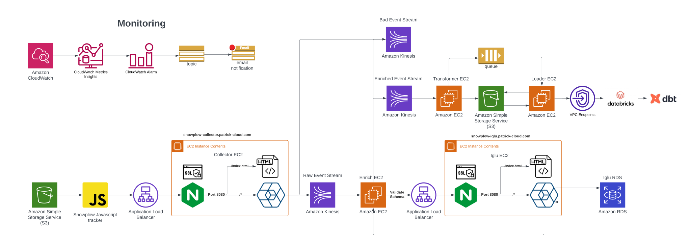
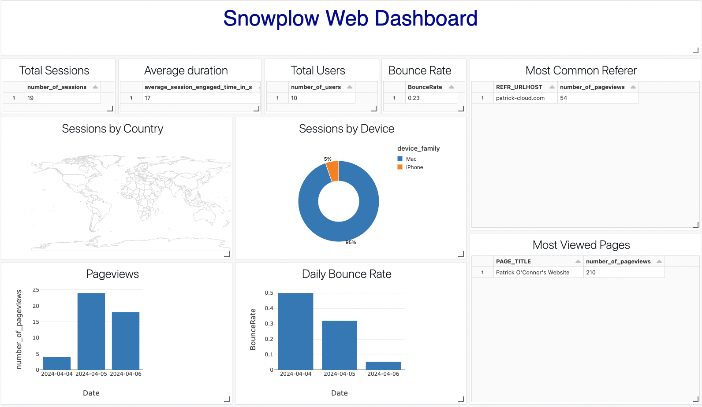

Behavioral Analytics
A first-party event pipeline — collector, schema registry, enrichments, and a custom event, landing in the lakehouse.

I customized the Collector and Iglu modules so a single ALB handles all patrick-cloud.com traffic. Nginx runs on the server to allow SSL traffic from the ALB to the EC2 via self-signed certificates — listening on 443 (and 80, redirecting to 443) and forwarding to 0.0.0.0:8080 where the Snowplow application listens.
All EC2 instances sit in private subnets, reachable only through the ALB. Kinesis, SQS, SNS, and Secrets Manager are encrypted with a CMK for fine-grained IAM; SQS and Kinesis have access policies defined on top.
Prometheus scrapes metrics from the Collector application, exposed on port 8125.
Each application ships logs to Cloudwatch. A Cloudwatch metric filter on every log group watches for the pattern ERROR, with an attached alarm that emails on trigger.
Data lands in the Databricks warehouse where dbt processes the event data into models. The dashboard below is built from a Databricks notebook.

I created a custom Snowplow event, Sample Input, that reads whatever you type below. It needed a custom schema added to my Iglu registry so the event would validate.
The following events are collected by the JavaScript tracker.
Uses the ua-parser library to parse the user agent and provide information about the user's device.
Parses and analyzes all user-agent information of an HTTP request, extracting as much as possible about device and browser — device class (phone, tablet, etc.) included.
Computes a fingerprint of each event using the query string parameters.
Links events to marketing campaigns using the query string parameters.
Uses the referer-parser library to extract attribution data from referer URLs.
snowplow-collector.patrick-cloud.com — Nginx directs traffic to index.html
snowplow-iglu.patrick-cloud.com — Nginx directs traffic to index.html